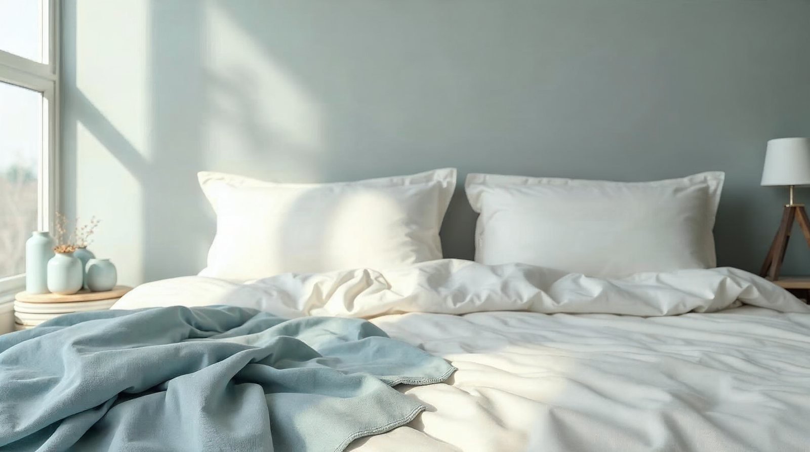

이종호 한의사 감수좋은꿈참사랑한의원 대표원장 (한의사 면허번호 19769)발행 2026-11-26 · 수정 2026-11-26
이 글의 차례
새벽 세 시, 갑자기 목덜미부터 뜨거운 기운이 확 올라옵니다. 이불을 걷어차고 나면 이번에는 땀이 식으며 오슬오슬 춥습니다. 다시 이불을 끌어당기고 눈을 감아 보지만 머릿속은 이미 말똥말똥합니다. 시계를 보니 알람까지 세 시간, 그 시간이 길게만 느껴집니다.
갱년기 무렵 잠이 달라졌다는 이야기는 진료실에서 가장 자주 듣는 고민 가운데 하나입니다. "예전에는 머리만 대면 잤는데요"라는 말씀 뒤에는 대개 몇 달째 이어진 피곤함이 숨어 있습니다. 잠이 흔들리면 낮의 기분과 집중, 관절의 통증까지 함께 흔들립니다.
이 시기의 불면은 한 가지 이유로만 오지 않습니다. 열감과 식은땀이 잠을 깨우고, 두근거림과 걱정이 다시 잠드는 것을 막고, 밤중 소변이 잠을 한 번 더 끊어 놓습니다. 그래서 저는 "잠이 안 와요"라는 말을 들으면 어느 단계에서 잠이 무너지는지부터 함께 찾아봅니다.
잠은 억지로 끌어오려 할수록 더 멀어지는 성질이 있습니다. 이 글에서는 갱년기 불면이 왜 생기는지, 다른 불면과 무엇이 다른지, 침실과 하루 리듬에서 무엇을 바꿔 볼 수 있는지를 차례로 정리했습니다.
갱년기 불면은 어떤 모습으로 오나요?
갱년기 불면은 크게 세 가지 모습으로 나타납니다. 잠들기까지 한참 걸리는 경우, 잠은 드는데 밤중에 여러 번 깨는 경우, 새벽에 일찍 깨서 다시 잠들지 못하는 경우입니다. 이 가운데 갱년기에는 밤중에 깨는 모습이 특히 흔합니다.
깨는 이유를 여쭤보면 덥고 땀이 나서, 가슴이 쿵쾅거려서, 화장실에 가고 싶어서, 그냥 눈이 떠져서라고 다양하게 말씀하십니다. 한 번 깨면 이런저런 생각이 꼬리를 물어 한 시간 넘게 뒤척이는 분도 많습니다.
낮에는 머리가 멍하고 기억이 잘 나지 않으며, 사소한 일에도 짜증이 나기 쉽습니다. 오후가 되면 몸이 무겁고 졸린데, 막상 밤이 되면 다시 정신이 또렷해지는 엇갈림을 겪는 분도 계십니다.
왜 갱년기에 잠이 얕아질까요
여성호르몬은 잠과도 가깝습니다. 에스트로겐은 체온 조절을 돕고, 프로게스테론은 마음을 차분하게 하고 잠을 부르는 쪽으로 일합니다. 갱년기에 이 두 호르몬이 함께 줄고 오르내리면, 몸이 밤에 깊이 가라앉는 힘이 약해집니다.
체온 조절이 흔들리는 것도 큰 이유입니다. 잠이 들려면 몸속 온도가 조금 내려가야 하는데, 갱년기에는 뇌의 온도 조절 중추가 예민해져 작은 변화에도 열을 확 내보내려 합니다. 그것이 얼굴로 오르는 열감과 식은땀이고, 이 과정이 밤에 일어나면 잠이 끊깁니다.
마음의 출렁임도 잠을 흔듭니다. 이 시기에는 자녀의 독립, 부모님의 건강, 직장에서의 변화가 한꺼번에 겹치기 쉽습니다. 걱정이 많은 날 밤에는 몸이 긴장한 채로 누워 있게 되고, 그 긴장이 얕은 잠으로 이어집니다.
나이가 들면서 방광이 예민해지고, 체중이 늘면서 코골이나 숨 멈춤이 새로 생기는 분도 있습니다. 갱년기 무렵 처음 코를 곤다는 말을 들었다면 그것도 잠을 얕게 만드는 원인이 될 수 있어 함께 살핍니다.
다른 불면과는 무엇이 다를까요?
스트레스로 인한 불면은 대개 잠들기 어려운 쪽이 두드러지고, 걱정거리가 해결되면 함께 나아지는 경우가 많습니다. 갱년기 불면은 걱정과 상관없이 열감이나 땀 때문에 깨는 일이 섞여 있다는 점이 다릅니다. 깬 순간 몸이 덥거나 땀에 젖어 있었다면 갱년기 변화를 함께 생각합니다.
우울로 인한 불면은 새벽에 일찍 깨어 기분이 바닥으로 가라앉고, 흥미와 입맛이 함께 떨어지는 모습이 많습니다. 갱년기에는 두 가지가 겹치기도 해서, 기분이 2주 넘게 가라앉아 있다면 그 부분을 따로 살핍니다.
수면무호흡은 본인보다 가족이 먼저 알아채는 경우가 많습니다. 코를 심하게 골다 잠시 숨이 멎는다는 말을 들었거나, 자고 나도 머리가 무겁고 낮에 졸음이 심하다면 수면 검사를 먼저 받아 보시길 권합니다. 갑상선 기능이 높아져도 두근거림과 땀, 불면이 함께 올 수 있어 내과 검사로 확인합니다.
스스로 살펴볼 수 있는 점
아래 질문에 답해 보시면 내 잠이 어느 단계에서 흔들리는지 짐작하는 데 도움이 됩니다.
- 잠들기까지 30분 넘게 걸리는 날이 일주일에 몇 번인가요?
- 밤에 깰 때 덥거나 땀에 젖어 있나요?
- 깬 뒤 다시 잠들기까지 얼마나 걸리나요?
- 밤중에 화장실 때문에 몇 번 깨시나요?
- 코골이나 숨 멈춤을 들은 적이 있나요?
- 낮에 기분이 가라앉거나 짜증이 늘었나요?
모든 질문에 정확히 답하지 못하셔도 괜찮습니다. 짐작이어도 충분합니다. 일주일만 메모해 보시면 대략의 모양이 보이고, 그 모양에 따라 먼저 손볼 곳이 달라집니다.
잠이 흔들리면 낮에는 무엇이 달라질까요?
잠이 몇 주째 얕아지면 낮의 모습이 먼저 달라집니다. 아침에 일어나도 몸이 묵직하고, 오전 내내 머리에 안개가 낀 듯합니다. 하려던 말이 잘 떠오르지 않고, 방금 둔 물건을 찾느라 집 안을 몇 바퀴 도는 일도 늘어납니다. 이런 변화 때문에 기억력 걱정을 안고 오시는 분도 많습니다.
감정도 함께 예민해집니다. 평소라면 웃어넘겼을 말에 서운함이 오래 남고, 가족에게 날카로운 말이 먼저 나갑니다. 그러고 나면 또 미안해서 마음이 무거워집니다. 잠이 모자란 몸은 감정의 완충재가 얇아진 상태라는 것을 알아 두시면 스스로를 덜 탓하게 됩니다.
몸의 통증도 잠과 이어져 있습니다. 잠을 설친 다음 날에는 어깨와 허리가 더 뻐근하고, 손가락이 더 뻣뻣하다고 말씀하시는 분이 많습니다. 그래서 진료실에서는 통증 이야기를 하시는 분께도 잠을 꼭 여쭙고, 잠 이야기를 하시는 분께도 몸의 통증을 함께 여쭙습니다.
갱년기 불면에 대해 자주 헷갈리는 것
첫째, 잠을 못 잤으니 일찍 누워 보충해야 한다는 생각입니다. 졸리지 않은데 일찍 누우면 침대에서 깨어 있는 시간만 길어집니다. 오히려 졸릴 때 눕고, 일어나는 시각은 일정하게 지키는 쪽이 다음 날 밤의 잠을 단단하게 만듭니다.
둘째, 술 한 잔이 잠에 도움이 된다는 생각입니다. 술은 처음에는 잠을 부르는 것 같지만, 몇 시간 뒤 몸이 술을 분해하면서 잠을 얕게 만들고 열감과 땀을 부추깁니다. 갱년기 불면이 있는 분께는 저녁 술을 줄이는 것부터 권합니다.
셋째, 밤에 깬 것을 큰일로 여기는 생각입니다. 사람은 원래 밤사이 여러 번 아주 짧게 깨고, 대부분은 기억하지 못합니다. 깬 것 자체보다 깬 뒤 '큰일 났다'는 생각이 다시 잠드는 것을 막습니다. 깼을 때는 천천히 숨을 내쉬며 몸의 힘을 빼는 것에만 집중해 보세요.
먼저 이렇게 여쭙니다
처음 오시면 저는 대략 이런 순서로 여쭙니다.
- 잠이 달라진 것은 언제부터이고, 생리 변화와 시기가 겹치나요?
- 몇 시에 눕고, 몇 시에 잠들고, 몇 시에 일어나시나요?
- 밤에 깨는 이유는 주로 무엇인가요?
- 커피, 차, 술은 하루 중 언제 얼마나 드시나요?
- 산부인과에서 호르몬 치료를 받거나 상담하신 적이 있나요?
- 수면제나 다른 약, 영양제를 드시고 계신가요?
수면제를 드시고 계시다면 처방한 선생님과 상의 없이 갑자기 끊지 않으시길 권합니다. 약을 드시는 것이 실패라는 뜻은 아닙니다. 갑자기 멈추면 잠이 더 크게 흔들릴 수 있습니다. 줄여 가고 싶으시다면 그 계획도 처방한 선생님과 함께 세우시면 됩니다.
일상에서 먼저 해 볼 수 있는 것
침실 온도부터 살펴보세요. 갱년기에는 조금 서늘한 방이 잠에 유리합니다. 두꺼운 이불 하나보다 얇은 이불을 두세 겹 겹쳐 두면 밤중에 더울 때 하나씩 걷어내기 쉽습니다. 잠옷은 땀을 잘 흡수하는 면 소재로, 머리맡에 갈아입을 옷을 하나 두셔도 좋습니다.
- 침실은 서늘하게, 이불은 얇게 여러 겹
- 일어나는 시각을 주말에도 일정하게
- 아침 햇빛 15분, 낮에 30분 안팎 걷기
- 커피와 녹차는 점심 이후 줄이기
- 저녁 술은 잠을 얕게 만드니 횟수부터 줄이기
- 잠들기 한두 시간 전 미지근한 물로 샤워하기
잠이 안 올 때 침대에서 오래 뒤척이지 마세요. 20분쯤 지나도 잠이 오지 않으면 거실로 나와 조명을 낮추고 조용한 일을 하다가 졸리면 다시 눕습니다. 침대가 '잠 못 드는 곳'으로 몸에 기억되지 않게 하려는 것입니다.
밤에 깼을 때 시계를 보지 않는 것도 도움이 됩니다. 시각을 확인하는 순간 '이제 몇 시간밖에 못 자겠구나' 하는 계산이 시작되고, 그 계산이 몸을 깨웁니다. 휴대폰은 손이 닿지 않는 곳에 두시길 권합니다.
낮잠은 20~30분 안쪽으로, 오후 세 시 전에 마치시면 밤잠을 덜 방해합니다. 저녁 식사는 잠들기 서너 시간 전에 마치고, 매운 음식과 뜨거운 국물은 열감을 부추길 수 있어 저녁에는 조금 줄여 보세요.
잠들기 전 한 시간을 이렇게 써 보세요
잠은 스위치처럼 켜지지 않고 천천히 내려앉습니다. 그래서 잠들기 전 한 시간을 '내려가는 시간'으로 정해 두시길 권합니다. 이 시간에는 집 안 조명을 한 단계 낮추고, 휴대폰과 텔레비전은 멀리 두며, 다음 날 할 일은 종이에 적어 머릿속에서 꺼내 놓습니다.
몸을 위해서는 미지근한 물로 샤워하거나 발을 따뜻한 물에 10분쯤 담가 보세요. 손발이 데워지면 몸속 열이 바깥으로 빠져나가면서 잠이 오기 쉬운 상태가 됩니다. 다만 너무 뜨거운 물은 오히려 열감을 부를 수 있으니 기분 좋게 따뜻한 정도면 충분합니다.
누운 뒤에는 숨을 길게 내쉬는 연습을 해 보세요. 넷을 세며 들이쉬고 여섯을 세며 내쉬기를 몇 분 이어 가면 어깨와 턱의 힘이 조금씩 빠집니다. 잠을 '불러오려' 애쓰기보다 몸이 편안해지는 것에만 마음을 두시면 됩니다.
한의원에서 함께 살필 수 있는 경우
- 열감과 식은땀 때문에 밤에 여러 번 깨는 경우
- 잠은 드는데 얕고 꿈이 많아 자고 나도 개운하지 않은 경우
- 두근거림이나 가슴 답답함 때문에 다시 잠들기 어려운 경우
- 손발은 차고 얼굴은 화끈거리는 엇갈림이 있는 경우
- 수면제는 줄여 가고 싶은데 생활 리듬부터 다시 잡고 싶은 경우
좋은꿈참사랑한의원에 오시면 맥을 짚고 잠의 모양과 열감, 소화, 기분을 함께 여쭙습니다. 그 내용을 바탕으로 생활에서 바꿔 볼 것 하나와 함께 침, 긴장을 풀어 주는 관리, 한약 상담 가운데 지금 상태에 맞는 것을 진찰한 뒤 정합니다.
한약을 상의할 때는 드시는 수면제, 호르몬 치료, 다른 약을 모두 확인하고 신중하게 정합니다. 산부인과 진료와 한의원 진료는 어느 한쪽을 고르는 것이 아니라 나란히 갈 수 있으니, 받고 계신 치료가 있다면 꼭 알려 주세요.
이렇게 기록해 오시면 상담이 쉬워집니다
잠은 기억보다 기록이 정확합니다. 2주 정도 아침에 일어나 한 줄씩 적어 보세요.
- 누운 시각, 잠든 것 같은 시각, 일어난 시각
- 밤에 깬 횟수와 이유(더위, 땀, 두근거림, 소변, 생각)
- 낮잠, 커피, 술
- 아침의 개운함을 0에서 10으로
- 생리가 있었던 날과 기분이 크게 흔들린 날
기록을 나란히 놓고 보면 술을 마신 날, 커피를 늦게 마신 날, 생리 전후에 잠이 더 흔들리는 흐름이 보이곤 합니다. 그 흐름이 먼저 손볼 곳을 알려 줍니다.
함께 지내는 가족이 있다면 코골이나 뒤척임, 잠꼬대가 있는지도 한번 물어봐 주세요. 내가 기억하지 못하는 밤의 모습이 잠을 이해하는 데 뜻밖의 단서가 되기도 합니다. 휴대폰 녹음 기능으로 하룻밤 소리를 남겨 보시는 것도 방법입니다.

잠과 다시 친해지는 시간
갱년기 불면은 몸이 새로운 균형을 찾는 동안 잠시 흔들리는 것입니다. 오늘 밤 잠을 못 잤다고 해서 내일 하루가 무너지는 것은 아닙니다. '오늘 못 자도 괜찮다'는 마음이 오히려 잠을 가까이 부르기도 합니다.
이번 주에는 일어나는 시각을 일정하게 맞추는 것 하나만 지켜 보세요. 아침이 자리를 잡으면 밤은 대개 조금씩 따라옵니다. 다음에 오시면 2주 동안의 잠 기록부터 함께 펼쳐 보겠습니다.
이런 증상은 먼저 확인이 필요합니다
- 자는 동안 숨이 자주 멎는다는 말을 듣고 낮에 운전 중에도 졸음이 쏟아지는 경우
- 가슴 두근거림과 함께 가슴 통증이나 심한 숨참, 어지러움으로 쓰러질 것 같은 경우
이런 신호가 있으면 한의원보다 가까운 병원이나 응급실을 먼저 찾으세요.
함께 읽으면 좋은 글
- 갱년기에 몸이 달라질 때 한의원에서는 무엇을 먼저 묻나요?
- 갱년기에 밤마다 땀에 젖어 깨는 날이 많을 때는 어떻게 하나요?
- 갱년기 무렵 갑자기 가슴이 두근거릴 때는 어떻게 살피나요?
- 새벽에 자꾸 잠이 깨는 이유는 무엇이고, 어떤 점을 살펴보나요?
- 잠이 잘 오지 않을 때 한의원에서는 무엇을 먼저 살피나요?

여쭙는 것
- 잠이 달라진 것은 언제부터이고, 생리 변화와 시기가 겹치나요?
- 몇 시에 눕고, 몇 시에 잠들고, 몇 시에 일어나시나요?
- 밤에 깨는 이유는 주로 무엇인가요?
생활에서 해 볼 것
- 침실은 서늘하게, 이불은 얇게 여러 겹
- 일어나는 시각을 주말에도 일정하게
- 아침 햇빛 15분, 낮에 30분 안팎 걷기
한의원에서 함께 살필 것
- 열감과 식은땀 때문에 밤에 여러 번 깨는 경우
- 잠은 드는데 얕고 꿈이 많아 자고 나도 개운하지 않은 경우
- 두근거림이나 가슴 답답함 때문에 다시 잠들기 어려운 경우
먼저 확인이 필요한 신호
- 자는 동안 숨이 자주 멎는다는 말을 듣고 낮에 운전 중에도 졸음이 쏟아지는 경우
- 가슴 두근거림과 함께 가슴 통증이나 심한 숨참, 어지러움으로 쓰러질 것 같은 경우
한눈에 보는 표
| 구분 | 핵심 |
|---|---|
| 여쭙는 것 | 잠이 달라진 것은 언제부터이고, 생리 변화와 시기가 겹치나요? 몇 시에 눕고, 몇 시에 잠들고, 몇 시에 일어나시나요? |
| 생활에서 해 볼 것 | 침실은 서늘하게, 이불은 얇게 여러 겹 일어나는 시각을 주말에도 일정하게 |
| 한의원에서 함께 살필 것 | 열감과 식은땀 때문에 밤에 여러 번 깨는 경우 잠은 드는데 얕고 꿈이 많아 자고 나도 개운하지 않은 경우 |
| 먼저 확인이 필요한 신호 | 자는 동안 숨이 자주 멎는다는 말을 듣고 낮에 운전 중에도 졸음이 쏟아지는 경우 가슴 두근거림과 함께 가슴 통증이나 심한 숨참, 어지러움으로 쓰러질 것 같은 경우 |
자주 묻는 질문
갱년기 불면은 시간이 지나면 저절로 나아지나요?
호르몬 변화가 자리를 잡으면서 덜해지는 분도 있지만, 그사이 생긴 잠 습관이 불면을 오래 붙잡아 두기도 합니다. 일어나는 시각과 침실 환경부터 정리해 두시길 권합니다.
수면제를 먹고 있는데 한의원 진료를 받아도 되나요?
드시는 약을 알려 주시면 그에 맞춰 진료 방향을 정합니다. 수면제는 처방한 선생님과 상의 없이 갑자기 끊지 않으셔야 합니다.
밤에 땀 때문에 깨면 어떻게 하나요?
머리맡에 마른 수건과 갈아입을 잠옷을 두고, 깨면 불을 밝게 켜지 않은 채 갈아입고 다시 누워 보세요. 침실은 조금 서늘하게, 이불은 얇게 겹쳐 두시면 도움이 됩니다.
호르몬 치료와 한약을 함께 해도 되나요?
받고 계신 치료와 드시는 약을 모두 확인하고 신중하게 정합니다. 호르몬 치료에 관한 결정은 산부인과 선생님과 상의하셔야 합니다.
좋은꿈참사랑한의원은 재진 때 지난번 이야기부터 이어서 여쭙니다. 진료시간과 예약은 오시는 길에서 확인하세요.
어디서 상담받을 수 있나요?
좋은꿈참사랑한의원은 서울 동작구 만양로2길 2 신성빌딩 3층·5층(서울 동작구 상도동, 7호선 상도역 3번 출구 근처)에 있습니다. 한의사 3명(이종호 대표원장, 조영기 수석진료원장, 정원영 진료원장)이 진료합니다. 진료시간은 평일 09:30~20:00(점심 13:00~14:00), 토·일·공휴일 09:30~15:00이며, 방문 전 전화로 확인을 권합니다. 예약은 네이버 예약, 카카오톡 상담, 전화 02-815-7510로 받습니다.
이 글은 일반적인 건강 정보이며 개인의 진단이나 치료를 대신하지 않습니다. 증상이 있거나 복용 중인 약이 있다면 진료를 통해 확인하세요. 치료 효과는 개인마다 다를 수 있습니다.
작성 기준: 일반적으로 알려져 있는 건강 정보를 참고해 정리했습니다(대표원장 감수). 증상 기록은 1~2주 동안 하루 1회, 비슷한 시간에 적어 오시면 지난 상태와 비교하기 쉽습니다.